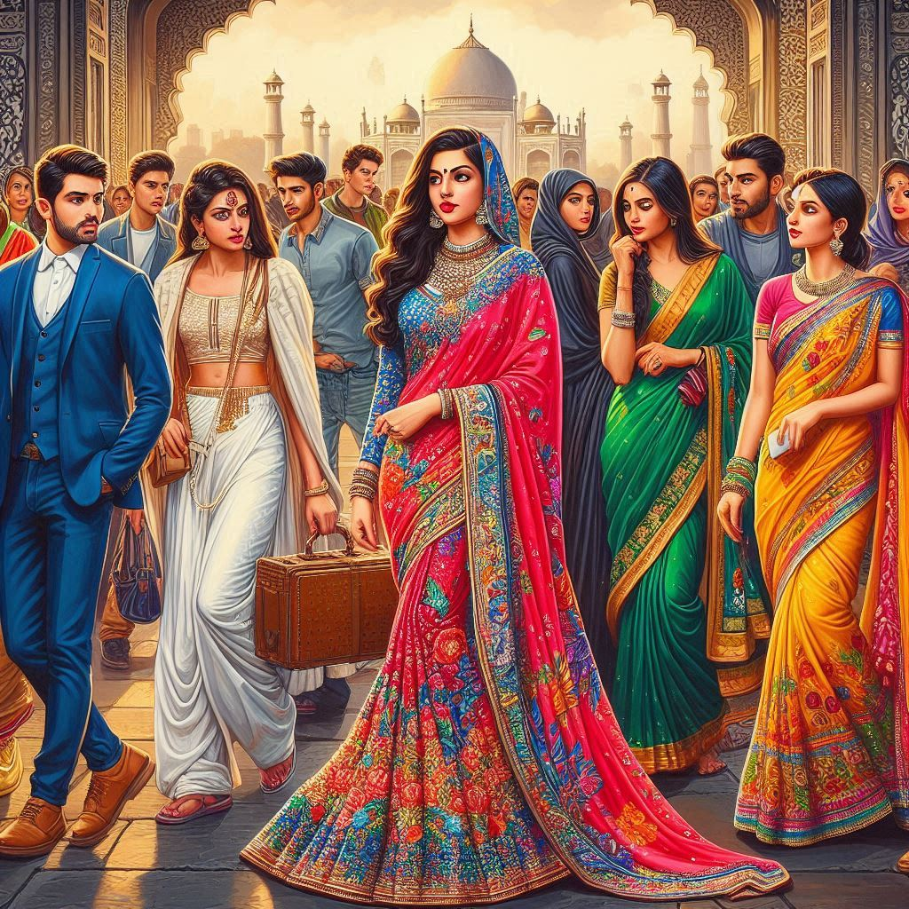
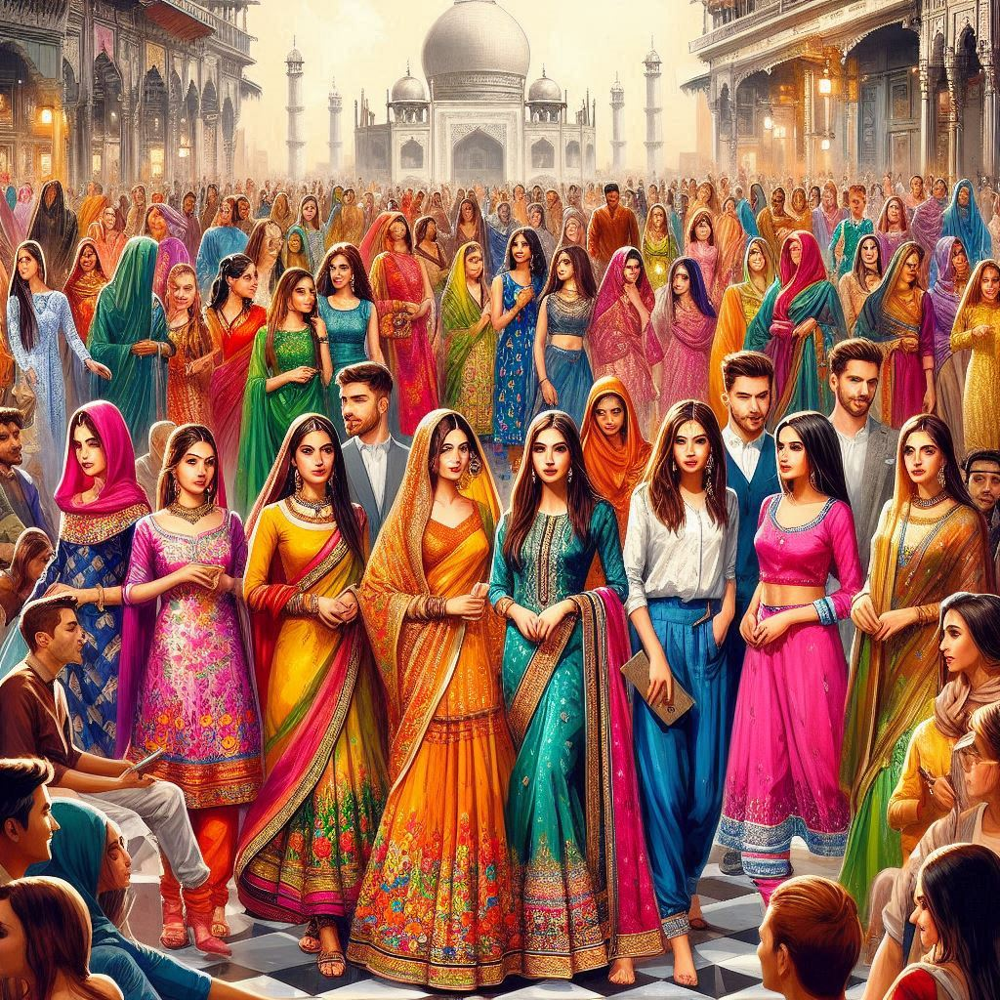

Delhi's dress culture is as diverse as its people, reflecting its blend of
traditional
and modern influences. People in Delhi wear a variety of clothing depending on the occasion, season, and
personal preferences. Here’s a look at the traditional and contemporary dress styles in Delhi:
1. Traditional Dress
For Women:
-
Saree: The saree, a quintessential Indian garment, is worn by many women,
especially on
formal occasions, festivals, and weddings. Traditional sarees like Banarasi,
Kanjivaram,
and Chanderi are popular in Delhi. During festivals such as Diwali and
Navratri,
you’ll see women adorning themselves in elaborate sarees with intricate patterns and embellishments.
-
Salwar Kameez: The salwar kameez is a popular everyday outfit, especially for women
who
prefer a mix of comfort and tradition. The outfit consists of a long tunic (kameez), a pair of loose
trousers (salwar), and a scarf (dupatta). Variations like Anarkali and Churidar are
also
commonly worn.
-
Lehenga Choli: For weddings and festive occasions, many women wear lehenga choli –
a
traditional outfit consisting of a long skirt (lehenga), a short blouse (choli), and a dupatta. This
attire is often seen during wedding ceremonies, especially in Delhi's vibrant Punjabi and Rajasthani
communities.
For Men:
-
Kurta-Pajama: The kurta-pajama is a traditional outfit worn by men for religious
ceremonies, weddings, and festivals. The kurta is a long tunic, and the pajama is a type of
loose-fitting pants. This outfit is especially common in winter and is worn for occasions like Eid,
Diwali, and family gatherings.
-
Sherwani: For weddings and formal events, men wear a sherwani, which is a long
coat-like garment often paired with a churidar or slim-fit pants. It’s a more formal, ornate outfit
and
is often worn at weddings or during significant cultural events.
-
Jodhpuri Suit: A royal, semi-formal attire often worn at weddings or during
high-profile functions, the Jodhpuri suit is a type of tailored jacket and trousers, often with an
embellished design.
2. Modern/Contemporary Dress
For Women:
-
Western Wear: As Delhi is a metropolitan city, many women opt for modern Western
clothing like jeans, trousers, skirts, dresses, and blouses, especially in urban areas. T-shirts,
blouses, skirts, and denim jeans are common daily wear.
-
Indo-Western Fusion: Many young women wear Indo-western fusion outfits, combining
traditional Indian clothing with Western styles. For instance, a salwar kameez might be paired with
a
denim jacket, or a saree can be worn with a Western-style top.
-
Dress and Skirts: In cosmopolitan areas like Connaught Place or Saket, it’s common
to
see women wearing dresses, skirts, and trousers. Young women often wear short skirts, dresses, and
leggings, particularly in the evenings, for casual outings or parties.
-
Ethnic Dresses: Women may also wear ethnic kurtis paired with leggings, palazzos,
or
churidars for a comfortable and stylish look, blending Indian elements with modern fashion.
For Men:
-
Jeans and T-shirts/Shirts: Like women, men in Delhi also wear a lot of
Western-style
clothing, particularly jeans or chinos paired with T-shirts or button-up shirts. This is the
standard
attire for day-to-day activities.
-
Business Suits: For professional settings, especially in offices, many men wear
formal
business suits, which are often paired with a dress shirt and tie. This is common in the corporate
and
government sectors of Delhi.
-
Casual Wear: Casual wear like cargo pants, denim jackets, and sweaters are common,
especially among younger people. During winters, hoodies, sweaters, and jackets are popular choices
due
to the chilly weather.


3. Seasonal Dress
Summer Wear: Delhi experiences extreme heat in summer, so light fabrics such as cotton and linen are
preferred. Women and men both wear light shirts, shorts, skirts, and t-shirts. Women may opt for sleeveless
tops
or dresses during the peak summer months.
Winter Wear: Winters in Delhi can get quite cold, especially in the evenings and early mornings.
Woolen
clothes, sweaters, jackets, coats, and shawls are worn to stay warm. Many people prefer layering outfits,
and
sweaters or cardigans are paired with denim jackets or trench coats.
4. Fashion Trends
Fusion and Street Style: Young people in Delhi often experiment with fashion, combining traditional
and
modern styles. For example, pairing a kurta with jeans or wearing sarees with crop tops has become popular
in
recent years.
Designer Wear: Delhi is also home to many high-end fashion designers, and you can find a variety of
luxurious, designer clothes. Designer boutiques and fashion houses like Manish Malhotra, Sabyasachi
Mukherjee,
and Abu Jani Sandeep Khosla are popular in Delhi, especially among those attending weddings and high-profile
events.
5. Influence of Global Fashion
Being the capital of India and a hub for business and education, Delhi is influenced by global fashion
trends.
International brands and shopping malls like DLF Emporio and Select Citywalk are popular destinations for
both
local and international shoppers. People in Delhi often follow international fashion trends, and you can see
global brands like Zara, H&M, Levi's, and Nike in the city.
6. Traditional and Cultural Attire During Special Occasions
Weddings and Celebrations: During weddings and festivals, traditional attire is worn. For example,
for
weddings, both men and women often dress in ethnic outfits, like lehenga cholis for women and sherwanis or
kurta-pajamas for men.
Religious and Cultural Celebrations: During festivals like Diwali, Holi, Eid, and Navratri, people
tend
to wear new clothes, often in bright and vibrant colors. During Navratri, women wear chaniya cholis (a type
of
skirt and blouse set) and men wear kurta-pajamas or dhoti with a traditional look.
7. Accessories
Jewelry: Delhiites love wearing jewelry, whether it's traditional, like gold and kundan, or modern
pieces. Bangles, earrings, necklaces, and kadas (bracelets) are common accessories for women, especially
during
festivals and weddings.
Footwear: Both traditional and Western footwear are popular. Kolhapuris (traditional sandals),
juttis,
and mojris are often worn with ethnic wear. Sneakers, loafers, and formal shoes are common for casual and
professional settings.
Conclusion
Delhi’s dress culture beautifully balances traditional and modern styles, with a rich fusion of Indian
attire
and Western influences. Whether it’s the elegant sarees and salwar kameez for women or the classic
kurta-pajama
for men, Delhi offers a wide array of fashion choices that reflect its dynamic and diverse population. From
the
trendy streets of South Delhi to the culturally rich celebrations during festivals, the way people dress in
Delhi speaks volumes about the city’s vibrant and ever-evolving identity.